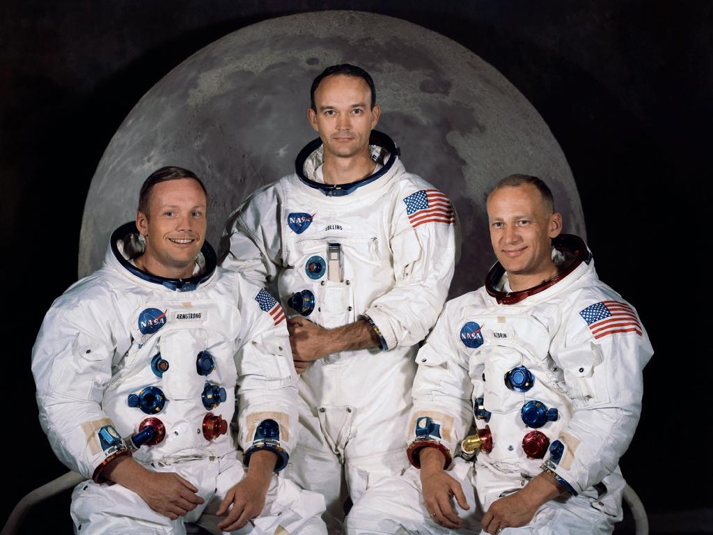
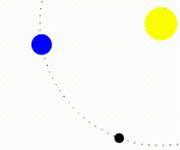
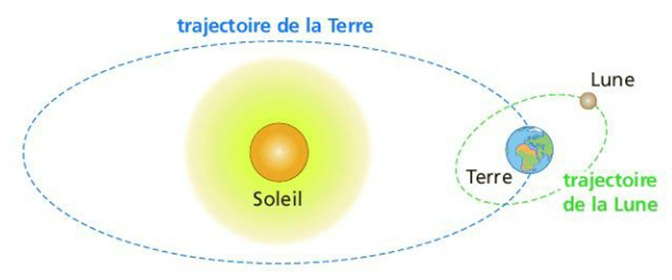
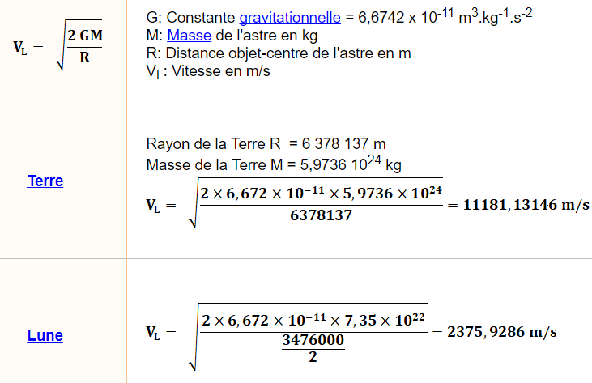

La lune a une masse de 7,3.10²² kg, soit 1,2% de celle de la Terre.
La Lune est un satellite tellurique.
Elle a une vitesse orbitale de 1km/s.
La Lune est recouverte sur plusieurs mètres de régolithe, c’est pour cela que
sa surface
est d’un gris terne uniforme.
En effet, il y a environ 200 000 cratères de plus d’un km qui perforent le sol lunaire.
Elle a un diamètre de 3 474km et elle est en orbite à environ 385 000km de la Terre.
La Lune est en orbite autour de la Terre en une trajectoire similaire à une ellipse.
Demi-grand axe de l’ellipse : 384 400km, demi-petit axe moyen : 383 800km.
La lune ne possède pas d’atmosphère, la température peut donc monter jusqu’à 120°C dans la journée
et tomber
à -248°C pendant la nuit. De plus, il n’y a ni eau liquide et ni vent.
Une nuit sur la Lune dure environ 14 jours terrestres, alors que le jour dure 27 jours terrestres.
Il y a environ 4,2 milliards d’années, la lune possédait un champ magnétique intense. Mais son noyau
liquide
s’est refroidit et a durcit, ce qui fit disparaitre son champ magnétique.
Premier pas sur la Lune
Date du premier pas sur la Lune à eu lieu pendant la mission appolo 11 le 21 juillet 1969
La mission a commencé le 16 juillet 1969 et a finit le 24 juillet 1969. Elle a duré 195 h 18min et
35 seconde.
Les trois astronautes sont :
Neil Armstrong
Buzz Aldrin
Michael Collins

Naissance de la Lune
Il existe plusieurs théories sur la naissance de la Lune :
La Lune s’est formée suite à un violent choc entre la Terre et une autre planète, Théia
qui avait la
taille de Mars. Les milliards de débris qui ont été envoyé dans l’espace ont aboutis à la
création de la
Lune.

Lorsque la Terre est née, des éléments tel que l’uranium, le thorium ou le plutonium se serait
concentrés
dans la croute terrestre au sein de roches denses. Elles auraient glissé jusqu’au manteau. Le thorium et l’uranium se seraient accumulés
dans une couche
intermédiaire entre le manteau et le noyau. Des petits réacteurs nucléaires naturels se seraient
alors
formés. Ces réacteurs auraient fini par atteindre une masse suffisante pour rendre possible une
réaction
nucléaire en chaine. Une simple onde de choc sur la Terre pouvait mettre le feu aux poudres.
Lorsqu’un astéroïde s’est écrasé sur la Terre, cela a enclenché cette explosion. Un anneau
autour de la
Terre se serait formé. Les débris n’auraient pas cessé de rentrer en collision les uns avec les
autres et
auraient finit par former une belle sphère argentée, la Lune.
Tout cela se serait produit alors que la Terre n’avait que 50 millions d’années.
La Lune, la Terre et la gravité
Le phénomène de la gravité explique pourquoi la Terre tourne autour du Soleil et la Lune tourne
autour de la
Terre.
La force de gravité est déterminée par la masse d’un objet. La force de gravité exercée entre deux
objets
est donc proportionnelle à leur masse, et cette force diminue très vite à partir du moment où ces
deux objets
sont suffisamment éloignés.
Nous attirons nous aussi des objets avec notre propre force de gravité, mais nous sommes trop légers
pour en
voir les effets ! Le Soleil est quant à lui si énorme qu’il parvient toujours à nous maintenir sous
sa force
de gravité, peu importe sa distance avec la Terre. Plus un corp est grand, plus sa force
gravitationnel est
élevée. La Lune exerce elle aussi une force de gravité, mais celle-ci est bien moins
importante que sur
Terre. Sur la surface lunaire, votre poids serait par exemple six fois plus faible que sur Terre !
Mais pourquoi la Lune ne tombe pas sur Terre comme le ferait une pomme depuis un arbre?
C’est parce que la Lune n’est jamais immobile : elle est constamment en mouvement autour de la
Terre. Sans la
force de gravité de la Terre, la Lune se contenterait de flotter dans l’espace. Le mouvement
permanent de la
Lune conjugué à sa distance de la Terre lui permet d’être en équilibre parfait entre chute et
flottement. Si
son mouvement avait été plus lent, elle tomberait sur Terre. S’il avait été plus rapide, elle
flotterait de
manière incontrôlée dans l’espace.

La force de gravité dépend donc également de la distance. Si nous pouvions nous éloigner
suffisamment de la
Terre, nous pourrions échapper à son attraction. C’est ce que nous essayons de faire avec les
navettes
spatiales. Pour rejoindre l'espace, nous devons ainsi atteindre et dépasser ce que l’on appelle « la
vitesse
de libération », qui est d’environ 11,2 km/s.

Une fois qu’une navette atteint cette vitesse, elle est capable de rallier et de parcourir le
système solaire.
Nous ne subissons pas la force de gravité terrestre à l’intérieur d’une navette en orbite. Les
objets ne
tombent pas, ils flottent librement. Si vous sautez en l’air, vous ne retombez pas. La même chose
arrive aux
astronautes quand ils évoluent dans une station spatiale orbitant autour de la Terre.
Pourquoi la Lune ne tombe pas sur la Terre
D’après la loi de gravitation de Newton, tous les corps exercent des forces d’attraction les uns sur
les
autres. Ainsi, la Lune subit une force d’attraction dirigée vers le centre de la Terre.
Rappelons-nous d’abord que dans l’espace, il n’y a pas d’air. L’absence d’atmosphère signifie qu’il
y a une
absence de frottement, donc, que la vitesse ne diminue pas avec le temps. Cela veut dire que la
vitesse
actuelle de la Lune sera la même demain ou dans un million d’années.
Ce qui fait que la Lune ne tombe pas, c'est qu'elle a une vitesse propre qui est suffisante pour se
déplacer
avant de s'écraser sur la Terre.
Si la Lune n’était pas attirée par la Terre, elle se déplacerait en ligne droite et partirais bien loin.
Vu que
la gravité agit sur la Lune, sa trajectoire est légèrement déviée, ce qui fait une trajectoire courbée.
La
gravité agit à chaque instant et ainsi fait que la Lune dérive en cercle autour de la Terre.
Si l’on freinait la Lune jusqu’à la rendre immobile, elle ferait comme une pomme qui s’écrase sur la
Terre.
C’est grâce à sa grande vitesse que la Lune peut résister à l’attraction de la Terre.
La lune s’éloigne de 3,8cm par an.
Pour exemple, prenons une balle :
Si on lâche la balle, elle va tomber vers le bas, en formant une droite.
Si on lance la balle, elle va dérivée en courbe. La courbe sera de plus en plus grande par
rapport à la
force avec laquelle on l’a lancée.
Si on imagine pouvoir lancer la balle assez forte pour que le rayon de courbure soit le même que celui
de la
Terre, et bien la balle sera toujours attirée par le sol mais ne tombera jamais et elle finira par
décrire un
cercle autour de la Terre.
C’est avec cette technique qu’on envoie des satellites en orbite